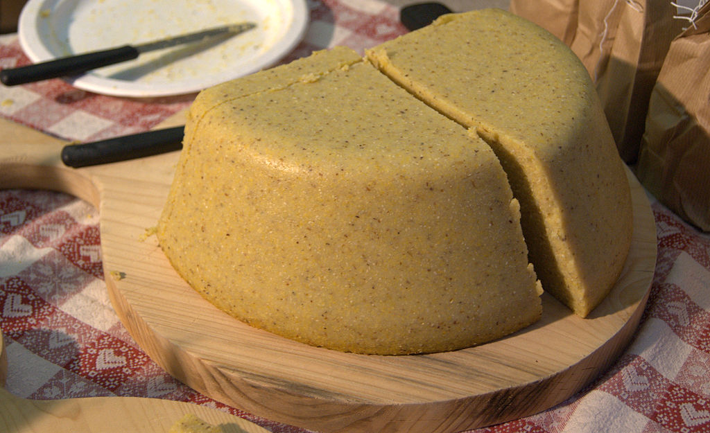

Polenta, Simplified
Odin Recipes Home

Image Source: Wikipedia.org
Description:
Polenta is easy to make, but using an electric pressure cooker makes it so much easier.
Ingredients:
- 1 cup polenta (not instant, I use Bob's Red Mill brand polenta)
- 4 cups water
- 1 teaspoon kosher salt
- black pepper
- 3 tablespoons unsalted butter
- 4 ounces finely grated parmesan (more for topping)
Steps:
- Whisk polenta and water together in an electric pressure cooker. I use an Instant Pot. Season with the kosher salt and black pepper. Set the pressure cooker to "saute" mode, and bring the mixture to a simmer. Give it one final whisk, and hit cancel. Seal the pressure cooker and cook on high pressure for 9 minutes. Do a quick release, and whisk the polenta until smooth.
- Cut the unsalted butter into 8 pieces and stir the butter into the polenta until melted. Add the parmasan in several additions (4 to 6) whisking thouroughly after each addition.
- Season with additional salt and pepper, if needed.
- Transfer to a serving dish and sprinkle with additional parmesan.